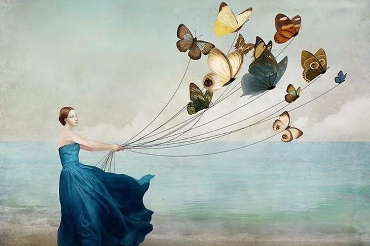

Romantisisme
Aliran romantisisme merupakan sebuah aliran yang menggambarkan suatu kenyataan yang ada melalui berbagai cara yang terkesan dramatis dan mempunyai suasana seperti di dalam mimpi. Misalnya saja kapal terombang-ambing karena cuaca badai, sesosok manusia yang berdiri di puncak bukit ketika senja datang, dan lain sebagainya. Romantisisme mengungkapkan tentang keindahan sebuah tema dari gaya teatrikalnya, tak hanya mengandalkan subjek yang indah-indah saja.
Naturalisme
Aliran naturalisme merupakan suatu aliran yang hendak menggambarkan lagi alam yang serupa dan seakurat mungkin dengan referensi yang akan dilukisnya. Naturalisme adalah ajang apresiasi untuk para seniman kepada alam. Umumnya, para seniman akan memilih keadaan waktu tertentu misalnya senja atau golden hour, untuk melukis pemandangan yang sangat istimewa dan luar biasa.
Realisme
Realisme merupakan suatu aliran yang ingin menunjukkan suatu peristiwa, model tertentu, atau suasana dengan keadaan sehari-hari, tanpa adanya drama atau dipilih kondisi yang paling indah saja. Aliran tersebut mungkin saja tidak menjiplak dengan sempurna apa yang mereka lihat, peristiwa, atau tema yang realistis, bukan hanya gambar saja.
Fauvisme
Fauvisme biasanya menggunakan gaya yang serupa dengan impresionisme. Akan tetapi menolak ide dasarnya yaitu peniruan alam. Aliran fauvisme ini adalah membuat warna menjadi unsur seni yang independen. Warna tersebut tidak hanya menjadi warna baju, warna kulit, atau warna langit. Tetapi menjadi salah satu unsur yang independen atau berdiri sendiri tanpa menjadi representasi fisik apa saja.
Ekspresionisme
Aliran ekspresionisme merupakan salah satu aliran yang mengedepankan ekspresi individu seniman itu sendiri terhadap apa yang mereka ingat, lihat, dan rasakan. Dapat dikatakan bahwa ekspresionisme merupakan aliran seni lukis yang menonjolkan ungkapan yang ada di dalam jiwa. Ekspresionisme tidak akan membebankan ketelitian dan juga kesulitan melukis di dalam karyanya. Oleh karena itu, aliran tersebut tidak mempunyai tingkat kemiripan yang akurat bahkan sangat melenceng dari referensi alam.
Kubisme
Aliran kubisme merupakan suatu aliran yang memuat berbagai sudut pandang dari suatu objek di dalam satu gambar yang sama. Sehingga menghasilkan lukisan yang terdeformasi dan terfragmentasi. Aliran yang satu ini juga menyederhanakan objek sampai menyerupai bentuk geometris. Suatu objek lukis bisa terdiri dari berbagai angle secara bersamaan sampai menghasilkan kejanggalan yang estetis.
Dadaisme
Dadaisme merupakan aliran yang tidak bisa membuat sebuah karya indah secara fisik. Tapi bermuatan kritik tajam ataupun pesan sosial dengan cara membuat suatu sindiran tidak langsung, hingga ke ungkapan langsung yang cukup provokatif kepada kaum berwenang yang dinilai membuat keputusan negatif. Aliran dadaisme akan memancarkan keindahan estetis dari sisi yang jarang dimuat dalam keindahan.
Surealisme

Surealisme merupakan aliran seni lukis yang menghadirkan gambar objek yang nyata dalam keadaan tidak mungkin terjadi di dalam dunia nyata. Sehingga citranya seperti yang ada di dalam mimpi. Gambar yang nyata namun dalam kondisi yang tidak nyata, seperti halnya: gambar manusia melayang, jam dinding yang meleleh, atau potret wajah dengan mulut dan hidung yang posisinya tertukar. Aliran surealisme biasanya menggunakan pendekatan teori psikologi Freud. Dimana aliran tersebut mengeksplorasi alam bawah sadar dan citra mimpi seorang manusia sebagai salah satu gambaran dari sebuah hasrat manusia.